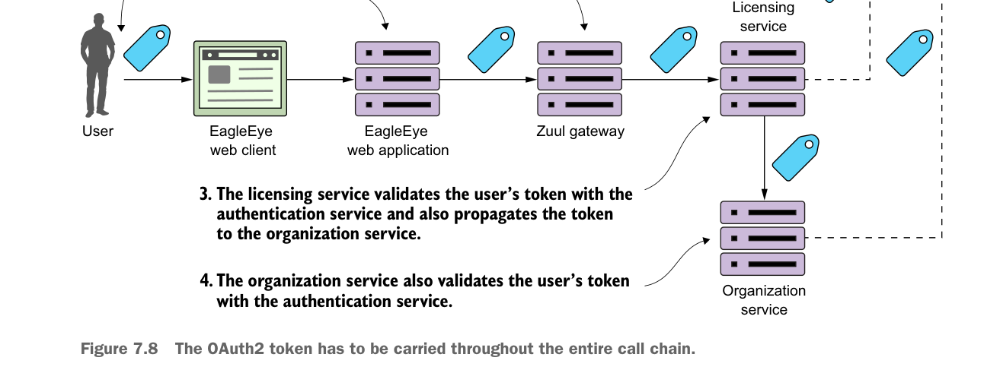

The OAuth2 token has to be carried throughout the entire call chain.
- Zuul will look up the licensing service endpoint and then forward the call onto one of the licensing services servers. The services gateway will need to copy the “Authorization” HTTP header from the incoming call and ensure that the “Authorization” HTTP header is forwarded onto the new endpoint.
- The licensing service will receive the incoming call. Because the licensing service is a protected resource, the licensing service will validate the token with EagleEye’s OAuth2 service and then check the user’s roles for the appropriate permissions.
As part of its work, the licensing service invokes the organization service. In doing this call, the licensing service needs to propagate the user’s OAuth2 access token to the organization service. - When the organization service receives the call, it will again take the “Authorization” HTTP header token and validate the token with the EagleEye OAuth2 server.
To implement these flows, you need to do two things. First, you need to modify your Zuul services gateway to propagate the OAuth2 token to the licensing service. By default, Zuul won’t forward sensitive HTTP headers such as Cookie, Set-Cookie, and Authorization to downstream services. To allow Zuul to propagate the “Authorization” HTTP header, you need to set the following configuration in your Zuul services gateway’s application.yml or Spring Cloud Config data store:
zuul.sensitiveHeaders: Cookie,Set-Cookie